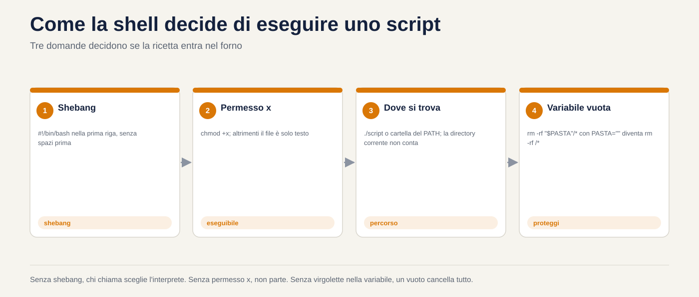
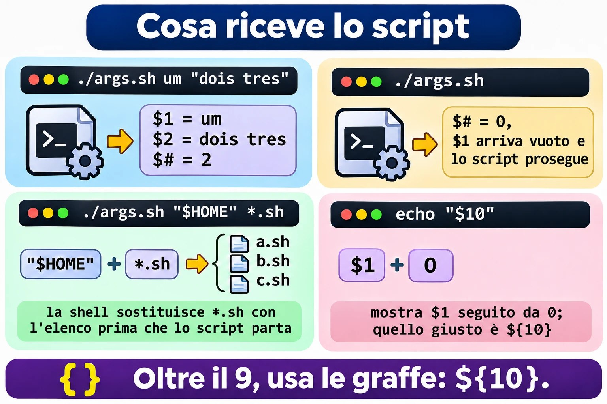
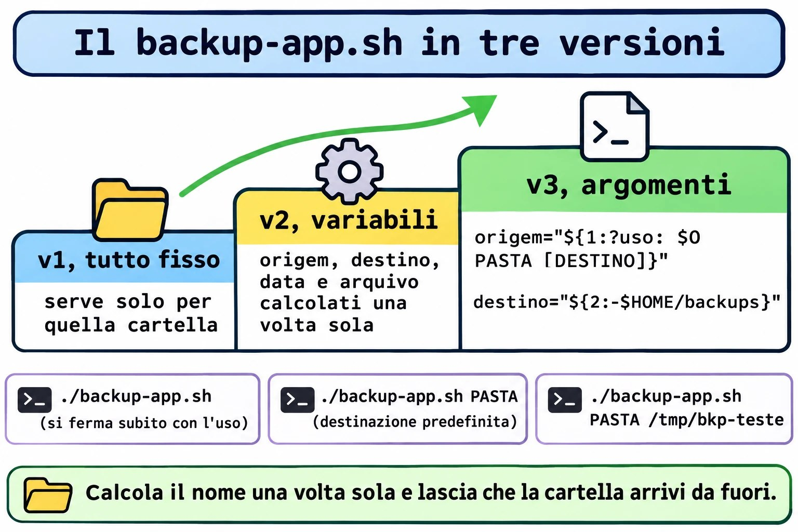
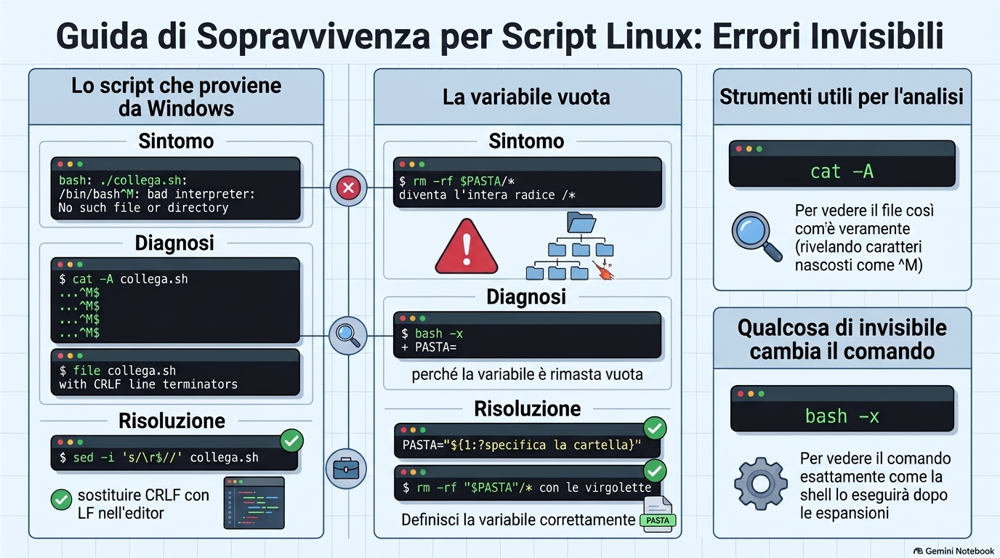

Lezione 1.8 · Il primo script
Trasformi il Protocollo di backup della Lezione 1.7 in uno script vero: un file che richiami per nome, da qualsiasi cartella, passandogli ciò che vuoi salvare, e che esegue i cinque passi sempre nello stesso ordine. Strada facendo, impari i tre errori che fanno inciampare il primo script di tutti: il permesso che manca, la virgoletta che manca e il file arrivato da Windows.
| Scheda | Lezione 1.8 |
|---|---|
| Modulo | M1 · Riga di comando, lezione 8 di 10 |
| Quando | Settimana 3 |
| Alla fine sai | Scrivere uno script con shebang, commenti e variabili; renderlo eseguibile e richiamarlo in tre modi, conoscendo la differenza; usare virgolette singole e doppie senza sorprese; ricevere argomenti con $1, $2, $# e "$@"; proteggere lo script da una variabile vuota; fare il debug con bash -n e bash -x; installare lo script in ~/bin |
| Prerequisiti | Lezione 1.7 completa, con ~/lab13/arquivo ancora presente nelle VM |
| Durata | Circa 2h30 |
| Snapshot | m1a8-inicio e m1a8-fim su entrambe le VM |
1 · Riscaldamento
Tre domande, a memoria, prima di leggere qualsiasi cosa. Scrivi le risposte; le Soluzioni le verificano in fondo.
- Nella Lezione 1.7, quale comando testa un
.tar.gzfino all'ultimo byte, senza estrarre nulla? - Nella Lezione 1.7, perché il Protocollo usa
-Cnella creazione del backup? - Scommessa: salvi un file
ola.shcon unechodentro e digitiola.shnel terminale, nella stessa cartella. Cosa succede?
2 · Perché conta
Venerdì, 18:00. Devi fare il backup di /etc di sei server prima di un aggiornamento. Nella Lezione 1.7, il Protocollo aveva cinque passi. Sei server per cinque passi fanno trenta comandi digitati a mano, a fine giornata. Sul quarto server dimentichi il chmod 600. Sul quinto, digiti -cfz invece di -czf. Nessuno se ne accorge fino al giorno in cui serve il backup.
Uno script non si stanca. Esegue i cinque passi nello stesso ordine, ogni volta, e tu controlli solo il risultato. È la differenza tra conoscere una procedura e avere una procedura.
Secondo caso. Un collega scrive uno script nel Blocco note di Windows, lo copia sul server e lo esegue. L'errore è bad interpreter: No such file or directory, riferito a /bin/bash, che ovviamente esiste. Perde un'ora a reinstallare bash. Il problema era un carattere invisibile alla fine di ogni riga. Oggi vedrai questo errore, di proposito, e lo risolverai con un comando.
Terzo caso, quello pericoloso. Uno script di pulizia contiene rm -rf "$PASTA"/*. Un giorno, la variabile PASTA arriva vuota. Il comando diventa rm -rf /*. È già successo in prodotti noti e in molti server di clienti. Oggi impari la riga che lo impedisce, e la testi senza cancellare nulla.
E il quarto, la vita di tutti i giorni: quasi ogni compito ripetuto diventa uno script semplice che riceve argomenti. Non è programmazione, è esattamente ciò che insegna questa lezione.
3 · Modello mentale
Uno script è una ricetta scritta. La shell è il cuoco che la legge riga per riga.
Tutto ciò che digiti nel terminale può finire in un file, una riga sotto l'altra. Quando ne ordini l'esecuzione, una shell apre il file e fa esattamente ciò che farebbe se tu digitassi. Qui non esiste un linguaggio nuovo: sono gli stessi comandi delle lezioni da 1.2 a 1.7.
Tre domande decidono se la ricetta gira:
- Chi legge la ricetta? La prima riga, lo shebang, dice quale cuoco:
#!/bin/bash. Senza, sceglie chi la richiama, e il risultato cambia da macchina a macchina. - La ricetta può essere eseguita? Linux non guarda l'estensione
.sh. Guarda il permessox. Senza, il file è solo testo. - Dov'è la ricetta? Se digiti solo il nome, la shell cerca nelle cartelle del
PATH, e la cartella corrente non c'è. O dici dove sta, con./, oppure la installi in una cartella delPATH.
E due elementi rendono la ricetta riutilizzabile:
- Le variabili sono gli appunti del cuoco:
destino=/backup. In lettura,$destino. - Gli argomenti sono gli ingredienti che consegni al momento:
backup-app.sh /etcfa valere$1come/etc. La stessa ricetta serve per qualsiasi cartella.
você digita: backup-app.sh /etc /backup
│ │ │
$0 $1 $2 $# = 2
o shell: 1. acha o arquivo (PATH ou ./)
2. confere a permissão x
3. lê a 1ª linha #!/bin/bash e chama o bash
4. o bash executa linha por linha, trocando $1 e $2 pelos valores4 · Il concetto a strati
Essenziale
Il file. Uno script minimo:
#!/bin/bash
# ola.sh - il mio primo script
echo "Olá, $USER. Hoje é $(date +%F)."#!/bin/bashè lo shebang. Deve essere la prima riga, e iniziare esattamente con#!, senza spazi prima.- Le righe che iniziano con
#sono commenti. La shell li ignora. Tu, fra sei mesi, no. - Il resto sono comandi normali.
$(date +%F)lo hai già usato nella Lezione 1.7: la shell esegue il comando e mette l'output al suo posto. La Lezione 1.9 lo approfondisce.
Eseguire. Tre modi, con risultati diversi:
| Come lo richiami | Cosa serve | Cosa succede |
|---|---|---|
bash ola.sh | Solo il permesso di lettura | Scegli tu bash; lo shebang viene ignorato |
./ola.sh | Permesso x | Il kernel legge lo shebang e avvia il programma indicato |
ola.sh | Permesso x e trovarsi in una cartella del PATH | La shell cerca nel PATH; la cartella corrente non conta |
Per dare il permesso: chmod +x ola.sh. La Lezione 2.7 spiega i permessi nel dettaglio; per ora, +x basta.
Variabili.
destino=/backup # crea: SENZA spazio prima né dopo il =
echo $destino # legge con $
echo "${destino}_old" # le graffe separano il nome dal testo attaccatodestino = /backup, con gli spazi, non crea nulla: la shell capisce che vuoi eseguire un comando chiamato destino con gli argomenti = e /backup.
Virgolette.
| Hai scritto | La shell fa | Esempio con nome=Ana |
|---|---|---|
'...' singole | Niente. Tutto è letterale | echo 'Oi $nome' → Oi $nome |
"..." doppie | Sostituisce $variável e $(comando), mantiene gli spazi | echo "Oi $nome" → Oi Ana |
| Senza virgolette | Sostituisce, e poi spezza sugli spazi ed espande * | Pericolo con nomi di file con spazi |
La regola pratica: variabile sempre tra virgolette doppie, "$destino". Senza eccezioni, finché non sai perché vuoi l'eccezione.
Argomenti.
| Variabile | Valore |
|---|---|
$0 | Il nome con cui lo script è stato richiamato |
$1, $2... ${10} | Il primo, il secondo... il decimo argomento |
$# | Quanti argomenti sono arrivati |
"$@" | Tutti gli argomenti, ciascuno intero, anche con spazi |
$? | Il codice di uscita dell'ultimo comando. La Lezione 1.9 lo usa molto |
Valore predefinito e valore obbligatorio.
destino="${2:-$HOME/backups}" # se $2 è arrivato vuoto, usa $HOME/backups
origem="${1:?uso: $0 PASTA}" # se $1 è arrivato vuoto, ferma lo script con questo messaggio:? è la cintura di sicurezza dello script. La Lezione 1.9 porta if, che fa lo stesso in modo più flessibile; fino ad allora, :? risolve.
Fare il debug.
bash -n script.sh # controlla solo la sintassi, non esegue nulla
bash -x script.sh # esegue mostrando ogni riga, già con le variabili sostituite
Ponte Windows
| In Windows | In Linux | Attenzione |
|---|---|---|
.bat, .cmd, .ps1 decidono l'interprete dall'estensione | Decide lo shebang; l'estensione .sh è solo per gli umani | Un .sh con #!/usr/bin/python3 gira come Python |
Set-ExecutionPolicy decide se gli script girano | Decide il permesso x di ogni file | Non esiste un interruttore globale |
La cartella corrente entra nella ricerca di cmd | La cartella corrente non è nel PATH | Per questo il ./ |
set destino=C:\bkp e %destino% | destino=/bkp e $destino | In Linux, uno spazio attorno al = rompe tutto |
%1, %2, %* | $1, $2, "$@" | |
Fine riga CRLF (\r\n) | Fine riga LF (\n) | Uno script salvato in Windows si rompe in Linux. Guasto A |
In PowerShell, $destino = "C:\bkp" accetta spazi attorno al =. È l'abitudine che fa inciampare di più chi viene da Windows.
Avanzato
sourceo.non eseguono: includono../script.shgira in una shell nuova, figlia della tua. Uncdo una variabile creata lì dentro muore quando lo script termina.source script.shesegue le righe nella tua shell, e ilcdresta. È così che viene letto~/.bashrc.export. Una variabile creata nel terminale non arriva allo script, a meno che non venga esportata:export DESTINO=/backup. Le variabili d'ambiente, comePATH,HOMEeUSER, sono già esportate.set -ufa fermare lo script quando usa una variabile che non esiste, invece di trattarla come vuota.set -esi ferma al primo comando che fallisce. Sono utili, ma hanno delle trappole; la Lezione 1.9 mostra quando fidarsene.#!/usr/bin/env bashcerca bash nelPATH, utile quando non è in/bin, come in alcuni BSD. Su Rocky e Debian,#!/bin/bashfunziona sempre.readonlyimpedisce che una variabile venga modificata dopo:readonly DESTINO=/backup.
5 · Rocky × Debian
| Rocky Linux 9 e 10 | Debian 13 | |
|---|---|---|
/bin/sh punta a | bash | dash, una shell più piccola e più veloce |
Script con #!/bin/sh e una funzione di bash, come {1..3} | Funziona, perché è bash | Si rompe o dà un risultato diverso |
~/bin nel PATH | Già presente, tramite ~/.bashrc, anche se la cartella non esiste ancora | Entra tramite ~/.profile, solo se la cartella esiste al login. Creala ed esci dalla sessione |
~/.local/bin nel PATH | Già presente | Stessa regola di ~/bin |
dos2unix per togliere il CRLF | sudo dnf install dos2unix | sudo apt install dos2unix |
bash --version | 5.1 su Rocky 9, 5.2 su Rocky 10 | 5.2 |
La regola che evita la prima riga della tabella: se usi funzioni di bash, scrivi #!/bin/bash. Usa #!/bin/sh solo quando lo script è POSIX puro, e testalo su Debian.
6 · Lab guidato
Fai tutto su entrambe le VM, a meno che il passo non ne indichi una sola. Gli script stanno in ~/lab13/scripts, e la materia prima è l'applicazione finta della Lezione 1.7, in ~/lab13/arquivo/app. In ogni passo, quando compare Prevedi, scrivi la risposta prima di premere Invio.


Passo 1 · Preparare
Sul nodo Proxmox:
qm snapshot 201 m1a8-inicio
qm snapshot 202 m1a8-inicioSu ogni VM:
ls ~/lab13/arquivo/app
mkdir -p ~/lab13/scripts
cd ~/lab13/scripts
echo "$SHELL"
bash --version | head -1ls deve mostrare conf, iniciar.sh, logs e www. Se la cartella non esiste, rifai il Passo 1 della Lezione 1.7. $SHELL deve essere /bin/bash.
Passo 2 · Il primo file e i tre modi di richiamarlo
Crea lo script con un here-document, il cat > arquivo <<'EOF' che hai usato nella Lezione 1.7. Le virgolette in 'EOF' fanno entrare il testo nel file esattamente com'è, senza sostituire $USER adesso.
cat > ola.sh <<'EOF'
#!/bin/bash
# ola.sh - il mio primo script
echo "Olá, $USER. Hoje é $(date +%F)."
echo "Estou rodando em $(hostname)."
EOF
cat ola.sh
ls -l ola.shPrevedi. Digiterai ola.sh, solo il nome, trovandoti nella stessa cartella. Cosa compare?
ola.shbash: ola.sh: command not found. Il file è lì, ma la shell non cerca nella cartella corrente: cerca nelle cartelle del PATH. Guarda quali sono:
echo "$PATH"Ora di' dove sta il file, con ./:
./ola.shbash: ./ola.sh: Permission denied. L'ls -l di prima ha mostrato -rw-r--r--: non c'è nessuna x. Per Linux, questo è testo, non un programma.
Decidi 1 · Il modo che funziona senza x. Prima di dare il permesso, esegui bash ola.sh. Cosa succede?
- A)
Permission denied, come con./ola.sh. - B) Funziona, perché ciò che viene eseguito è
bash, eola.shè solo un file che lui legge. - C) Funziona, perché
bashignora i permessi di qualsiasi file. - D)
command not found, perchéola.shnon è nelPATH.
Scegli un'opzione prima di continuare.
| Se hai scelto | Risultato | Perché |
|---|---|---|
| A | ❌ Sbagliato | La x è richiesta a ciò che viene eseguito. Qui ciò che viene eseguito è /bin/bash, che ha la x. ola.sh deve solo essere letto, e ha la r. |
| B | ✅ Giusto | bash riceve il nome del file come argomento, lo apre e lo legge riga per riga, come farebbe con un cat. Lo shebang diventa un normale commento. |
| C | ❌ Sbagliato | Se togli la r con chmod -r ola.sh, bash ola.sh fallisce con Permission denied. Rispetta la lettura; solo che non ha bisogno della x. |
| D | ❌ Sbagliato | Il PATH entra in gioco solo per trovare il primo nome della riga, che qui è bash. ola.sh è un argomento con percorso relativo. |
Da ricordare: bash script.sh richiede r; ./script.sh richiede r e x; script.sh richiede r, x e trovarsi nel PATH.
Controlla:
bash ola.sh
chmod +x ola.sh
ls -l ola.sh
./ola.shOra ls -l mostra -rwxr-xr-x, e ./ola.sh funziona. Un ultimo esperimento con lo shebang:
head -1 ola.sh
file ola.shfile risponde qualcosa come Bourne-Again shell script, Unicode text, UTF-8 text executable. Ha letto la prima riga, come fa il kernel.
Passo 3 · Variabili e virgolette, nel terminale
Prima di mettere variabili in uno script, sbaglia nel terminale, dove costa poco:
destino = /backupPrevedi il messaggio. È bash: destino: command not found. La shell ha letto destino come un comando, con due argomenti. Ora nel modo giusto:
destino=/backup
echo $destino
echo "Os backups vão para $destino"
echo 'Os backups vão para $destino'
echo "${destino}_antigo"
echo "$destino_antigo"Le ultime due righe sono la trappola delle graffe. "${destino}_antigo" mostra /backup_antigo. "$destino_antigo" mostra una riga vuota: la shell ha cercato una variabile chiamata destino_antigo, che non esiste, e l'ha sostituita con nulla, senza alcun errore.
Ora un nome di file con uno spazio, il caso che rompe più script:
cd /tmp
arq="relatorio final.txt"Decidi 2 · La virgoletta mancante. Digiti touch $arq, senza virgolette, e poi ls. Cosa compare?
- A) Un file
relatorio final.txt. - B) Due file:
relatorioefinal.txt. - C) Un file chiamato
$arq. - D) Un errore, perché
touchnon accetta spazi nel nome.
Scegli un'opzione prima di continuare.
| Se hai scelto | Risultato | Perché |
|---|---|---|
| A | ❌ Sbagliato | Sarebbe il risultato di touch "$arq". Senza virgolette, dopo aver sostituito la variabile la shell spezza il testo sugli spazi. |
| B | ✅ Giusto | La shell sostituisce $arq con relatorio final.txt e poi divide sugli spazi. touch riceve due argomenti e crea due file. |
| C | ❌ Sbagliato | Succederebbe con le virgolette singole: touch '$arq'. Senza virgolette, la variabile viene sostituita. |
| D | ❌ Sbagliato | touch accetta qualsiasi nome. Non sa nemmeno che c'era uno spazio: riceve due nomi separati. |
Da ricordare: variabile sempre tra virgolette doppie. touch "$arq", rm "$arq", cp "$arq" "$destino".
Controlla e ripulisci:
touch $arq
ls -l relatorio final.txt
touch "$arq"
ls -l "$arq"
rm -v relatorio final.txt "$arq"
cd ~/lab13/scriptsImmagina lo stesso errore con rm $arq: cancelleresti relatorio e final.txt, che potevano essere altri file, e relatorio final.txt resterebbe lì.
Passo 4 · Argomenti
Uno script che mostra solo ciò che ha ricevuto:
cat > args.sh <<'EOF'
#!/bin/bash
# args.sh - mostra gli argomenti ricevuti
echo "Nome do script: $0"
echo "Primeiro: $1"
echo "Segundo: $2"
echo "Quantidade: $#"
echo "Todos, um por linha:"
printf ' [%s]\n' "$@"
EOF
chmod +x args.shprintf ripete il modello [%s] una volta per ogni argomento. È un trucco per vedere esattamente dove ogni argomento inizia e finisce.
Prevedi il $# di ogni riga prima di eseguire:
./args.sh
./args.sh um dois tres
./args.sh um "dois tres"
./args.sh "$HOME" *.shRisposte: 0, 3, 2, e l'ultima dipende da quanti .sh ci sono nella cartella. *.sh viene espanso prima che lo script parta: lui non vede mai l'asterisco, riceve solo l'elenco dei nomi. Nota anche che, senza argomenti, $1 arriva vuoto e lo script va avanti, senza lamentarsi. Tienilo a mente per il Guasto B.
Decidi 3 · Il decimo argomento. Esegui ./args.sh a b c d e f g h i j. Dentro lo script, una riga dice echo "$10". Cosa mostra?
- A)
j, il decimo argomento. - B)
a0, il primo argomento seguito da uno zero. - C) Una riga vuota, perché esistono solo da
$1a$9. - D) Un errore di sintassi.
Scegli un'opzione prima di continuare.
| Se hai scelto | Risultato | Perché |
|---|---|---|
| A | ❌ Sbagliato | Sarebbe il risultato di "${10}". Senza graffe, la shell legge solo una cifra dopo il $. |
| B | ✅ Giusto | La shell legge $1, che vale a, e attacca lo 0 come testo. È la stessa trappola di $destino_antigo. |
| C | ❌ Sbagliato | Esistono ${10}, ${11} e quanti ne passi. Solo la forma corta, senza graffe, si ferma a 9. |
| D | ❌ Sbagliato | Non c'è errore: la shell accetta $10 e lo interpreta, in un modo che non volevi. |
Da ricordare: oltre il 9, usa le graffe: ${10}. Nel dubbio, usa sempre le graffe.
Controlla:
echo 'echo "com \$10: $10"' >> args.sh
echo 'echo "com \${10}: ${10}"' >> args.sh
tail -2 args.sh
./args.sh a b c d e f g h i j

*.sh già sostituito dalla shell, e le graffe dal decimo in poi.Passo 5 · Il Protocollo diventa script
Questo è il passo centrale. Scriverai lo stesso script tre volte, ogni versione migliore della precedente.
Versione 1, tutto fisso. È il Protocollo della Lezione 1.7, incollato in un file:
cat > backup-app.sh <<'EOF'
#!/bin/bash
# backup-app.sh v1 - tutto fisso
mkdir -p ~/backups
tar -czf ~/backups/app-$(date +%F_%H%M).tar.gz -C ~/lab13/arquivo app
ls -lh ~/backups
EOF
chmod +x backup-app.sh
./backup-app.shFunziona, ma serve solo per quella cartella, e il nome del file compare solo dentro tar. Se poi vuoi testare e salvare il sha256sum, dovrai ripetere il nome, con l'ora, che nel frattempo è cambiata.
Versione 2, con variabili. Il nome viene calcolato una volta e usato ovunque:
cat > backup-app.sh <<'EOF'
#!/bin/bash
# backup-app.sh v2 - variabili
origem="$HOME/lab13/arquivo/app"
destino="$HOME/backups"
data="$(date +%F_%H%M)"
arquivo="$destino/app-$data.tar.gz"
mkdir -p "$destino"
tar -czf "$arquivo" -C "$HOME/lab13/arquivo" app
tar -tzf "$arquivo" > /dev/null && echo "OK: o arquivo abre até o fim"
sha256sum "$arquivo" > "$arquivo.sha256"
chmod 600 "$arquivo" "$arquivo.sha256"
ls -lh "$arquivo" "$arquivo.sha256"
EOF
bash -n backup-app.sh
./backup-app.shbash -n non mostra nulla quando la sintassi è corretta. Nota che dentro lo script ho usato $HOME, e non ~: la ~ non viene sostituita dentro le virgolette, e una variabile tra virgolette è più sicura.
Prevedi. Eseguilo di nuovo, ora con bash -x. Quante righe che iniziano con + compariranno?
bash -x ./backup-app.shUna per ogni comando, con le variabili già sostituite dai valori: + data=2026-11-02_1430, + tar -czf /home/student/backups/app-2026-11-02_1430.tar.gz .... -x è la radiografia dello script: quando qualcosa va storto, è la prima cosa che esegui.
Versione 3, con argomenti. Ora la cartella arriva da fuori, e la destinazione ha un valore predefinito:
cat > backup-app.sh <<'EOF'
#!/bin/bash
# backup-app.sh - backup di una cartella secondo il Protocollo della Lezione 1.7
# Uso: backup-app.sh PASTA [DESTINO]
# PASTA cosa salvare, obbligatorio
# DESTINO dove salvare, predefinito ~/backups
origem="${1:?uso: $0 PASTA [DESTINO]}"
destino="${2:-$HOME/backups}"
nome="$(basename "$origem")"
pai="$(dirname "$origem")"
data="$(date +%F_%H%M)"
arquivo="$destino/$nome-$data.tar.gz"
echo "Backup de $origem para $arquivo"
mkdir -p "$destino"
tar -czf "$arquivo" -C "$pai" "$nome"
tar -tzf "$arquivo" > /dev/null && echo "OK: o arquivo abre até o fim"
sha256sum "$arquivo" > "$arquivo.sha256"
chmod 600 "$arquivo" "$arquivo.sha256"
ls -lh "$arquivo" "$arquivo.sha256"
EOF
bash -n backup-app.shbasename restituisce l'ultimo pezzo del percorso, e dirname il resto. Per /home/student/lab13/arquivo/app, restituiscono app e /home/student/lab13/arquivo. È il -C del Protocollo, calcolato da solo.
Testa i tre casi:
./backup-app.sh
./backup-app.sh ~/lab13/arquivo/app
./backup-app.sh ~/lab13/arquivo/app /tmp/bkp-teste
ls -l ~/backups /tmp/bkp-testeIl primo si ferma subito con ./backup-app.sh: line 7: 1: uso: ./backup-app.sh PASTA [DESTINO], senza creare nulla. Il secondo usa la destinazione predefinita. Il terzo scrive in /tmp/bkp-teste. Controlla l'impronta digitale dell'ultimo:
sha256sum -c /tmp/bkp-teste/app-*.sha256OK. Siccome sha256sum ha salvato il percorso completo, il controllo funziona da qualsiasi cartella.
Decidi 4 · Il backup di /etc. Esegui ./backup-app.sh /etc, come utente normale. Cosa succede?
- A) Funziona uguale, con tutto
/etcdentro. - B)
tarsi lamenta di vari file che non riesce a leggere, comeshadow, crea un backup incompleto, e ciononostante compareOK: o arquivo abre até o fim. - C) Lo script si ferma alla prima riga, perché
/etcnon è una cartella dell'utente. - D)
tarrifiuta l'intero backup e non viene creato nulla.
Scegli un'opzione prima di continuare.
| Se hai scelto | Risultato | Perché |
|---|---|---|
| A | ❌ Sbagliato | Un utente normale non legge /etc/shadow, /etc/sudoers e altri. tar non ha modo di salvare ciò che non riesce a leggere. |
| B | ✅ Giusto | tar mostra Cannot open: Permission denied per ognuno, salva il resto e termina con un errore. Ma la riga successiva testa solo se il file si apre, e si apre. Lo script dice OK per un backup senza i file più importanti. |
| C | ❌ Sbagliato | :? controlla solo se $1 è arrivato. /etc è arrivato, quindi lo script prosegue. |
| D | ❌ Sbagliato | tar è testardo: salta ciò che non riesce a leggere e continua. Per questo il backup esiste, solo che è incompleto. |
Da ricordare: uno script che non controlla il risultato di ogni passo ti mente. La Lezione 1.9 insegna if e $?, e questa è la prima cosa che sistemerai con loro.
Controlla, guardando la fine dell'output:
./backup-app.sh /etc /tmp/bkp-teste 2>&1 | tail -5
sudo ./backup-app.sh /etc /tmp/bkp-teste | tail -3Con sudo, nessuna lamentela, e il file ha proprietario root e permessi 600. È com'è giusto che sia un backup di /etc.
Passo 6 · Installare in ~/bin
Uno script che richiami con ./ da dentro una cartella non è ancora uno strumento. Installalo:
mkdir -p ~/bin
cp backup-app.sh ~/bin/
cd /
backup-app.sh ~/lab13/arquivo/appDecidi 5 · Rocky e Debian. Hai fatto esattamente questo su entrambe le VM, senza uscire dalla sessione. Qual è il risultato?
- A) Funziona su entrambe.
- B) Funziona su rocky-lab; su debian-lab,
command not found. - C) Funziona su debian-lab; su rocky-lab,
command not found. - D) Non funziona su nessuna finché non riavvii la VM.
Scegli un'opzione prima di continuare.
| Se hai scelto | Risultato | Perché |
|---|---|---|
| A | ❌ Sbagliato | Su Debian, ~/bin entra nel PATH solo se esiste al momento del login. Non esisteva quando sei entrato. |
| B | ✅ Giusto | Il ~/.bashrc di Rocky mette sempre ~/bin nel PATH. Il ~/.profile di Debian lo mette solo se la cartella esiste già all'accesso. |
| C | ❌ Sbagliato | È il contrario. Controlla con echo "$PATH" su entrambe. |
| D | ❌ Sbagliato | Riavviare risolve, ma è esagerato. Basta uscire e rientrare, oppure rileggere il file con source ~/.profile. |
Da ricordare: dopo aver creato ~/bin, esci e rientra. Controlla con type nome-do-script.
Controlla, su debian-lab:
echo "$PATH" | tr ':' '\n' | grep bin
source ~/.profile
type backup-app.sh
cd / && backup-app.sh ~/lab13/arquivo/apptype risponde backup-app.sh is /home/student/bin/backup-app.sh. Lo script è diventato un comando.
Protocollo · Script che non fa vergognare
- Prima riga:
#!/bin/bash. Seconda: un commento che dice cosa fa. Terza:# Uso:con gli argomenti.- Argomento obbligatorio con
${1:?uso: ...}; opzionale con${2:-padrão}.- Calcola i nomi una volta, in variabili, e usa le variabili ovunque.
- Ogni variabile tra virgolette doppie:
"$arquivo".- Prima di eseguire:
bash -n. Se succede qualcosa di strano:bash -x.- Testa senza argomenti, con un argomento e con un percorso che contiene spazi.
chmod +x, installa in~/binoppure, per tutti gli utenti, in/usr/local/bin.


7 · Rompi e ripara
Guasto A · Lo script arrivato da Windows
Un collega ti manda uno script che ha scritto nel Blocco note. Simula il suo file: il \r\n alla fine di ogni riga è esattamente ciò che scrive il Blocco note.
cd ~/lab13/scripts
printf '#!/bin/bash\r\n# do colega\r\necho "versao do colega"\r\n' > colega.sh
chmod +x colega.sh
./colega.shOsserva. Il messaggio è qualcosa come:
bash: ./colega.sh: /bin/bash^M: bad interpreter: No such file or directory/bin/bash esiste. Ma nota il ^M attaccato.
Diagnostica. Mostra ciò che il normale cat nasconde:
cat colega.sh
cat -A colega.sh
file colega.shcat -A mostra ^M$ alla fine di ogni riga: ^M è il \r, e $ segna la fine della riga. file dice with CRLF line terminators. Il kernel ha letto la prima riga come /bin/bash\r e ha cercato un programma con quel nome, con un carattere invisibile in fondo. Non esiste.
Decidi A · La riparazione. Cosa risolve il problema una volta per tutte?
- A) Eseguire con
bash colega.sh. - B) Togliere il
\ralla fine di ogni riga:sed -i 's/\r$//' colega.sh, oppuredos2unix colega.sh. - C) Reinstallare bash.
- D) Cambiare lo shebang in
#!/bin/sh.
Scegli un'opzione prima di continuare.
| Se hai scelto | Risultato | Perché |
|---|---|---|
| A | ❌ Sbagliato | Evita lo shebang, ma bash legge ogni riga con il \r in fondo. L'echo stampa un \r nascosto, e un cd /tmp\r fallisce con No such file or directory. Il problema cambia posto. |
| B | ✅ Giusto | Il file passa ad avere le fini riga di Linux. sed è già installato su entrambe le VM; dos2unix fa lo stesso e va installato. |
| C | ❌ Sbagliato | bash è perfetto. È il caso della sezione 2: un'ora persa nel posto sbagliato. |
| D | ❌ Sbagliato | La prima riga continua ad avere il \r, ora /bin/sh^M, e l'errore è lo stesso. |
Da ricordare: bad interpreter con ^M è sempre CRLF. Controlla con cat -A e ripara con sed -i 's/\r$//'.
Ripara.
sed -i 's/\r$//' colega.sh
cat -A colega.sh
file colega.sh
./colega.shOra cat -A mostra solo $ alla fine, e lo script gira. Per non ricevere il problema: in VS Code, l'angolo in basso a destra mostra CRLF; clicca e passa a LF prima di salvare. In Notepad++, menu Modifica, Conversione fine riga.
Guasto B · La variabile vuota
Questo è l'errore che ha già cancellato server interi. Lo riprodurrai in sicurezza: lo script mostra solo il comando, con echo, e non cancella nulla.
cat > limpa.sh <<'EOF'
#!/bin/bash
# limpa.sh - pulisce una cartella di file temporanei (versione pericolosa)
PASTA=$1
echo "Vou executar:" rm -rf $PASTA/*
EOF
chmod +x limpa.shPrima, l'uso normale:
mkdir -p /tmp/temporarios && touch /tmp/temporarios/a.tmp /tmp/temporarios/b.tmp
./limpa.sh /tmp/temporariosVou executar: rm -rf /tmp/temporarios/a.tmp /tmp/temporarios/b.tmp. Giusto. Ora qualcuno dimentica l'argomento.
Osserva.
./limpa.shVou executar: rm -rf /bin /boot /dev /etc /home /lib .... L'intero elenco della radice; su Rocky, comincia con /afs. Senza l'echo, questa era la fine del server.
Diagnostica. Usa la radiografia:
bash -x ./limpa.shLa prima riga con + è + PASTA=: la variabile non ha ricevuto nulla. Subito dopo, $PASTA/* è diventato /*, e la shell ha espanso l'asterisco in tutto ciò che esiste nella radice.
Decidi B · La cintura di sicurezza. Quale modifica impedisce il disastro?
- A) Mettere le virgolette:
rm -rf "$PASTA"/*. - B) Esigere l'argomento:
PASTA="${1:?informe a pasta}", e mantenere le virgolette nelrm. - C) Sostituire
rm -rfconrm -r. - D) Eseguire sempre lo script come utente normale.
Scegli un'opzione prima di continuare.
| Se hai scelto | Risultato | Perché |
|---|---|---|
| A | ❌ Sbagliato | Le virgolette proteggono dagli spazi, ma "$PASTA"/* con PASTA vuota resta ""/*, cioè /*. Aiuta, non salva. |
| B | ✅ Giusto | Senza argomento, lo script si ferma sulla riga della variabile, prima di arrivare al rm. Le virgolette restano per il caso in cui la cartella abbia uno spazio nel nome. |
| C | ❌ Sbagliato | Senza la f, rm chiede conferma sui file protetti e mostra errori, ma cancella tutto ciò che ha il permesso di cancellare. |
| D | ❌ Sbagliato | Riduce il danno, ma l'utente cancella comunque tutto ciò che è suo, compresa la sua /home. E gli script di pulizia di solito girano come root, nel cron. |
Da ricordare: ogni variabile usata in un rm, mv o chmod -R deve essere obbligatoria, con :?, e stare tra virgolette.
Ripara.
sed -i 's|^PASTA=\$1$|PASTA="${1:?informe a pasta}"|' limpa.sh
sed -i 's|rm -rf \$PASTA/\*|rm -rf "$PASTA"/*|' limpa.sh
cat limpa.sh
./limpa.sh
./limpa.sh /tmp/temporariosOra, senza argomento, lo script si ferma con line 3: 1: informe a pasta, e con l'argomento funziona come prima. Apri backup-app.sh e controlla che sia nato già con questa cintura, sul $1.
La lezione
I due errori di oggi hanno la stessa faccia: qualcosa di invisibile che cambia il comando. Un \r che non vedi alla fine della riga. Una variabile vuota che non vedi in mezzo al rm. Entrambi si rivelano con gli stessi strumenti: cat -A per vedere il file com'è, e bash -x per vedere il comando come lo eseguirà la shell. Quando uno script fa qualcosa che non gli hai chiesto, non leggere lo script: eseguilo con -x e leggi ciò che ha fatto.


8 · Trappole
| Digiti o vedi | Cosa succede | Il modo giusto |
|---|---|---|
destino = /backup | destino: command not found | destino=/backup, senza spazi |
script.sh, nella cartella dello script | command not found | ./script.sh, oppure installarlo nel PATH |
./script.sh subito dopo averlo creato | Permission denied | chmod +x script.sh |
bad interpreter con ^M | File con CRLF di Windows | sed -i 's/\r$//' script.sh |
echo '$HOME' | Mostra $HOME, letterale | Virgolette doppie: echo "$HOME" |
touch $arq con uno spazio nel nome | Crea due file | touch "$arq" |
"$nome_backup" | Cerca una variabile chiamata nome_backup, che non esiste, e mostra vuoto, senza errore | "${nome}_backup", sempre con le graffe quando attacchi testo |
echo "$10" | Mostra $1 seguito da 0 | "${10}" |
rm -rf "$PASTA"/* senza controllare $PASTA | Con la variabile vuota, diventa rm -rf /* | PASTA="${1:?...}" prima |
#!/bin/sh e {1..5} nello script | Funziona su Rocky, si rompe su Debian | #!/bin/bash |
~ dentro le virgolette: "~/backups" | Non viene sostituita; crea una cartella chiamata ~ | "$HOME/backups" |
cd /var/log dentro lo script | Alla fine, resti nella cartella di prima | Normale: lo script gira in una shell figlia. Per restare, source |
Script con tar fallito e OK alla fine | Il test successivo non sa che tar è fallito | Controllare $?. Lezione 1.9 |
9 · Quiz
Dieci domande, senza consultare nulla. Scrivi la lettera o la risposta di ciascuna e solo dopo apri le Soluzioni.
1. Quale riga crea la variabile porta con il valore 8080?
- A)
porta = 8080 - B)
$porta=8080 - C)
porta=8080 - D)
set porta 8080
2. s.sh ha i permessi -rw-r--r--. Quale di queste chiamate fallisce?
- A)
bash s.sh - B)
./s.sh - C)
source s.sh - D)
sh s.sh
3. Esegui ./args.sh "um dois" tres. Quanto valgono $# e $1?
- A)
3eum - B)
2eum dois - C)
2e"um dois", con le virgolette - D)
3eum dois
4. Con nome=web01, cosa mostra echo 'Servidor: $nome'?
- A)
Servidor: web01 - B)
Servidor: $nome - C)
Servidor: - D) Errore di sintassi
5. Lo shebang di uno script dice #!/bin/bsh, con un errore di battitura. Cosa succede con ./script.sh e con bash script.sh?
- A) Funzionano entrambi: bash corregge il nome.
- B) Falliscono entrambi con
bad interpreter. - C)
./script.shfallisce conbad interpreter;bash script.shfunziona, perché lo shebang diventa un commento. - D)
./script.shfunziona;bash script.shfallisce.
6. Nello script, destino="${2:-/backup}". Quanto vale destino con ./s.sh /etc e con ./s.sh /etc /mnt/usb?
- A)
/backupin entrambi - B) vuoto e
/mnt/usb - C)
/backupe/mnt/usb - D)
/etce/mnt/usb
7. Cosa fa origem="${1:?falta a pasta}" quando lo script viene richiamato senza argomenti?
8. Hai creato ~/bin e hai copiato meu.sh lì dentro, su una VM Debian, senza uscire dalla sessione. meu.sh dà command not found. Qual è la causa più probabile, e come confermarla?
9. vai.sh contiene solo cd /var/log. Dove ti trovi dopo ./vai.sh? E dopo source vai.sh?
10. Which of the following variables contains the number of arguments passed to a shell script?
- A)
$@ - B)
$# - C)
$* - D)
$0 - E)
$?
10 · Flashcard e promemoria
Da sapere a memoria
Questa parte è da tenere in testa. È lo scheletro di ogni script che scriverai.
#!/bin/bashnella prima riga, senza spazi primachmod +x script.she poi./script.shnome=valor, senza spazi;"$nome"per leggere, sempre con virgolette doppie'...'non sostituisce nulla;"..."sostituisce$variávele$(comando)$1,$2: argomenti;$#: quanti;"$@": tutti;$0: il nome dello script${1:?mensagem}: obbligatorio;${2:-padrão}: opzionalebash -n script.sh: controlla la sintassi;bash -x script.sh: mostra ogni riga eseguitacat -A script.sh: mostra il^Mdi Windows;sed -i 's/\r$//' script.shlo ripara
Da consultare
Questa parte non devi impararla a memoria. Ricorda solo dove si trova.
"${nome}_texto": graffe quando attacchi testo al nome;${10}oltre il 9basename /a/b/cdàc;dirname /a/b/cdà/a/bsource script.sho. script.sh: gira nella shell corrente;cde variabili restanoexport NOME=valor: la variabile arriva agli script richiamati dopotype comandoocommand -v comando: da dove viene il comando~/binper te;/usr/local/binper tutti gli utenti, consudo- Debian:
~/binentra nelPATHal login, se esiste. Rocky: sempre #!/bin/shsu Debian èdash, senza le funzioni di bashset -usi ferma su una variabile inesistente;set -esi ferma al primo errore. Lezione 1.9file script.shmostrawith CRLF line terminatorsquando arriva da Windows
Flashcard
| Fronte | Retro |
|---|---|
| Cos'è lo shebang? | La prima riga, #!/bin/bash, che dice al kernel quale programma legge lo script |
Linux decide in base all'estensione .sh? | No. Decide in base allo shebang e al permesso x |
Perché script.sh dà command not found nella cartella dello script? | La cartella corrente non è nel PATH. Usa ./script.sh |
Quale permesso richiede bash script.sh? | Solo lettura. Ciò che viene eseguito è bash |
Cosa c'è di sbagliato in nome = valor? | Gli spazi. La shell esegue un comando chiamato nome |
Differenza tra '$HOME' e "$HOME"? | Le singole sono letterali; le doppie sostituiscono con il valore |
Cosa succede con touch $arq se arq ha uno spazio? | Crea un file per ogni parola |
Cosa contiene $#? | Quanti argomenti ha ricevuto lo script |
Perché "$@" e non $*? | "$@" mantiene ogni argomento intero, anche con spazi |
Cosa mostra "$10"? | $1 seguito da uno 0. Usa ${10} |
Cosa fa ${1:?msg}? | Ferma lo script con il messaggio se $1 arriva vuoto |
Cosa fa ${2:-/backup}? | Usa /backup se $2 arriva vuoto |
bad interpreter con ^M: causa? | Fini riga di Windows, CRLF |
A cosa serve bash -x? | A mostrare ogni comando già con le variabili sostituite |
Perché un cd dentro lo script non cambia la tua cartella? | Lo script gira in una shell figlia, che muore alla fine |
11 · Checklist di uscita
Spunta solo ciò che sai fare senza guardare la lezione:
- [ ] Scrivere uno script con shebang, commento d'uso e variabili
- [ ] Spiegare perché
script.sh,./script.shebash script.shdanno risultati diversi - [ ] Usare virgolette singole e doppie e prevedere il risultato
- [ ] Ricevere argomenti con
$1,$2e$#, e mostrarli tutti con"$@" - [ ] Rendere obbligatorio un argomento e dare un valore predefinito a un altro
- [ ] Fare il debug con
bash -nebash -x - [ ] Riconoscere e riparare uno script con CRLF
- [ ] Spiegare perché una variabile vuota in un
rmè pericolosa, e impedirlo - [ ] Installare uno script in
~/bine farlo funzionare su Rocky e su Debian - [ ] Spiegare la differenza tra eseguire e usare
source
Ultimo esercizio, senza guardare. Chiudi questa lezione. In ~/lab13/scripts, crea saudacao.sh:
- Riceve un nome come primo argomento, obbligatorio. Senza, si ferma con il messaggio
uso: saudacao.sh NOME [CIDADE]. - Riceve una città come secondo argomento, opzionale, con predefinito
Roma. - Mostra
Olá, NOME, de CIDADE. Você me passou N argumentos. - Funziona con
./saudacao.sh "Ana Maria" Milano, mostrando il nome intero. - È installato in
~/bine funziona da/tmp.
Le risposte sono alla fine delle Soluzioni.
Snapshot di chiusura. Sul nodo Proxmox:
qm snapshot 201 m1a8-fim
qm snapshot 202 m1a8-fimNon cancellare ~/bin/backup-app.sh: nella Lezione 1.9 acquisisce if, codice di uscita e un log, e smette di dire OK per un backup incompleto.
12 · Nella vita reale
Missione della settimana, sola lettura. Scegli un server che amministri davvero. Se è di un cliente, fai solo ciò che il contratto consente; se hai dubbi, usa rocky-lab e debian-lab. Nessun comando di questa missione crea, modifica, esegue o cancella alcuno script: tu leggi soltanto.
Dove vivono gli script di casa:
ls -l /usr/local/bin /usr/local/sbin ~/bin 2> /dev/null
ls -l /etc/cron.daily /etc/cron.d 2> /dev/null
sudo crontab -l 2> /dev/null
crontab -l 2> /dev/nullPer ogni script che compare, guarda la prima riga e il tipo:
file /usr/local/bin/*
head -n 1 /usr/local/bin/* 2> /dev/nullCerca script arrivati da Windows:
grep -l $'\r' /usr/local/bin/* /usr/local/sbin/* 2> /dev/null$'\r' è il modo di bash di scrivere il \r sulla riga di comando. Se compare qualche nome, quello script funziona per fortuna, o viene richiamato con bash script, o non funziona e nessuno se n'è accorto.
Scegli lo script più importante, come quello di backup, e leggilo con calma:
less /usr/local/bin/NOME-DO-SCRIPT
grep -n 'rm ' /usr/local/bin/NOME-DO-SCRIPTPer ogni rm che grep mostra, guarda se la variabile è tra virgolette e se qualcuno garantisce che non arrivi vuota.
Su Proxmox, gli script di solito vivono in /root, in /usr/local/bin o negli hook di backup:
ls -l /root/*.sh /usr/local/bin 2> /dev/null
grep -n 'script' /etc/vzdump.confPer il diario. Rispondi in poche righe:
- Quanti script di casa hai trovato? Quali girano da soli, tramite cron?
- Hanno tutti lo shebang? Qualcuno usa
#!/bin/shcon funzioni di bash, su un Debian? - Qualcuno aveva
^M? - Lo script più importante ha un commento che dice cosa fa e come si usa?
- Qualche
rmcon una variabile senza virgolette, o senza controllo del vuoto? Annota il file e la riga, e non toccare: proponi la correzione a chi ne è responsabile.
Sfida della settimana. Uno script al giorno. Copia uno script reale, di un server che amministri, su rocky-lab, senza password né chiavi dentro. Leggilo con il Protocollo della sezione 6 accanto e annota cosa manca: shebang, uso, virgolette, :?. Riscrivi la copia, nel laboratorio, con ciò che mancava, ed eseguila con bash -n e bash -x. Nel diario, una riga al giorno: quale script, quanti punti del Protocollo mancavano, e qual era il più pericoloso.
Domani, senza guardare. Apri un terminale domani e, senza consultare nulla:
- Scrivi uno script di tre righe che mostra
hostnamee la data. - Eseguilo con
bash, prova con./, dai il permesso ed eseguilo di nuovo. - Fagli ricevere un nome come argomento obbligatorio.
- Eseguilo con
bash -xe spiega ogni riga con+. - Spiega a voce alta perché
rm -rf $PASTA/*è pericoloso.
Se ti blocchi su uno, torna solo al Passo di quel punto.
13 · Con DeepTutor
Usa il DeepTutor della tua rete locale dopo il lab, non al posto suo. I comandi iniziano con !:
!quiz Aula 1.8: chiedi dieci domande nuove su virgolette, argomenti e permessi, nel formato dei Decidi.!explica aspas: chiedi la differenza tra singole, doppie e nessuna, con un esempio che si rompe in ogni caso.!feynman: spiega a un tirocinante perchéscript.shdàcommand not foundnella cartella dello script. DeepTutor indica dove sei rimasto vago.!quebra: chiedi un nuovo script rotto, come un$10, una~tra virgolette o una variabile con uno spazio, e ripara solo conbash -xecat -A.!quiz 1.8 script: chiedi tre compiti pratici del tipo "crea/usr/local/bin/xche riceve un argomento", ciascuno con il comando che ne conferma il risultato.!cartoes: genera flashcard dalla sezione 10 e ripassale dopo tre giorni.!erro: incolla un messaggio vero, comebad interpreterounbound variable, e chiedi la causa prima della soluzione.!revisao: programma il ripasso della Lezione 1.8 tra tre giorni e tra una settimana.
Soluzioni commentate
Riscaldamento
gzip -t arquivo.tar.gz, oppuretar -tzf arquivo.tar.gz > /dev/null. Entrambi leggono il file fino all'ultimo byte.filelegge solo l'inizio e non individua un backup tagliato.- Perché i percorsi siano relativi e inizino con una cartella dotata di nome. Così, l'estrazione cade nella cartella in cui ti trovi, dentro una cartella sola, e mai sopra il sistema. Oggi lo script ha calcolato questo
-Cda solo, condirname. command not found. La shell cerca il comando nelle cartelle delPATH, e la cartella corrente non c'è. Con./ola.sh, l'errore cambia inPermission denied, perché manca lax. Sono due ostacoli, e il Passo 2 li ha mostrati entrambi.
Quiz
- C. Senza spazi attorno al
=e senza$in creazione. Il$serve solo per leggere. A è l'errore di chi viene da PowerShell, e D è la sintassi dicsh. - B.
./richiede lax. Le altre tre passano il file a una shell che deve solo leggerlo. - B. Le virgolette raggruppano
um doisin un argomento solo e non fanno parte del valore. Sono due argomenti. - B. Le virgolette singole non sostituiscono nulla. Con le doppie, sarebbe
Servidor: web01. - C. Il kernel prova a eseguire
/bin/bsh, che non esiste. Conbash script.sh, a eseguire è bash, e la prima riga è solo un commento. - C. Senza
$2, vale il predefinito. Con$2, vale ciò che è arrivato. - Lo script si ferma subito, mostrando qualcosa come
./s.sh: line 3: 1: falta a pasta, e termina con un codice di uscita diverso da zero. Nessuna riga dopo di essa viene eseguita. - Il
~/.profiledi Debian mette~/binnelPATHsolo se la cartella esiste al login, e non esisteva quando sei entrato. Conferma conecho "$PATH"otype meu.sh. Per risolvere, esci e rientra, oppure eseguisource ~/.profile. - Con
./vai.sh, nella stessa cartella di prima: ilcdè avvenuto in una shell figlia, che è terminata. Consource vai.sh, in/var/log: le righe sono state eseguite nella tua shell. - B. Guarda ogni alternativa:
| Se hai scelto | Risultato | Perché |
|---|---|---|
| A | ❌ Sbagliato | $@ sono gli argomenti stessi, non la quantità. |
| B | ✅ Giusto | $# è il numero di argomenti posizionali. |
| C | ❌ Sbagliato | Anche $* sono gli argomenti, uniti in un testo solo. |
| D | ❌ Sbagliato | $0 è il nome con cui lo script è stato richiamato. |
| E | ❌ Sbagliato | $? è il codice di uscita dell'ultimo comando. |
Ultimo esercizio
Una risposta possibile:
cat > saudacao.sh <<'EOF'
#!/bin/bash
# saudacao.sh - saluta qualcuno
# Uso: saudacao.sh NOME [CIDADE]
nome="${1:?uso: saudacao.sh NOME [CIDADE]}"
cidade="${2:-Roma}"
echo "Olá, $nome, de $cidade. Você me passou $# argumentos."
EOF
chmod +x saudacao.sh
./saudacao.sh
./saudacao.sh "Ana Maria" Milano
cp saudacao.sh ~/bin/
cd /tmp && saudacao.sh Ana- Senza argomento, il
:?ferma lo script con il messaggio. - Il
:-dàRomaquando la città non arriva. $#conta gli argomenti arrivati.- Con le virgolette nella chiamata,
Ana Mariaarriva intero in$1. Con le virgolette nell'echo, esce intero. - Su Debian, se
~/binè stato creato in questa sessione, esci e rientra prima dell'ultimo comando.